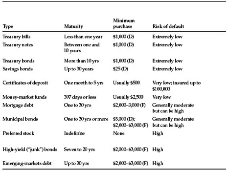
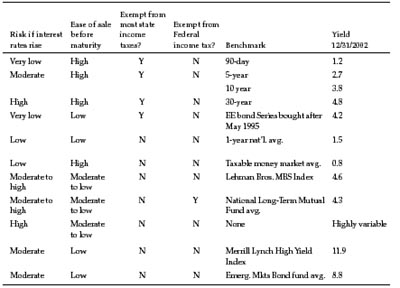

When you leave it to chance, then all of a sudden you don’t have any more luck.
—Basketball coach Pat Riley
H ow aggressive should your portfolio be?
That, says Graham, depends less on what kinds of investments you own than on what kind of investor you are. There are two ways to be an intelligent investor:
Graham calls the first approach “active” or “enterprising”; it takes lots of time and loads of energy. The “passive” or “defensive” strategy takes little time or effort but requires an almost ascetic detachment from the alluring hullabaloo of the market. As the investment thinker Charles Ellis has explained, the enterprising approach is physically and intellectually taxing, while the defensive approach is emotionally demanding. 1
If you have time to spare, are highly competitive, think like a sports fan, and relish a complicated intellectual challenge, then the active approach is up your alley. If you always feel rushed, crave simplicity, and don’t relish thinking about money, then the passive approach is for you. (Some people will feel most comfortable combining both methods—creating a portfolio that is mainly active and partly passive, or vice versa.)
Both approaches are equally intelligent, and you can be successful with either—but only if you know yourself well enough to pick the right one, stick with it over the course of your investing lifetime, and keep your costs and emotions under control. Graham’s distinction between active and passive investors is another of his reminders that financial risk lies not only where most of us look for it—in the economy or in our investments—but also within ourselves.
How, then, should a defensive investor get started? The first and most basic decision is how much to put in stocks and how much to put in bonds and cash. (Note that Graham deliberately places this discussion after his chapter on inflation, forearming you with the knowledge that inflation is one of your worst enemies.)
The most striking thing about Graham’s discussion of how to allocate your assets between stocks and bonds is that he never mentions the word “age.” That sets his advice firmly against the winds of conventional wisdom—which holds that how much investing risk you ought to take depends mainly on how old you are. 2 A traditional rule of thumb was to subtract your age from 100 and invest that percentage of your assets in stocks, with the rest in bonds or cash. (A 28-year-old would put 72% of her money in stocks; an 81-year-old would put only 19% there.) Like everything else, these assumptions got overheated in the late 1990s. By 1999, a popular book argued that if you were younger than 30 you should put 95% of your money in stocks—even if you had only a “moderate” tolerance for risk! 3
Unless you’ve allowed the proponents of this advice to subtract 100 from your IQ, you should be able to tell that something is wrong here. Why should your age determine how much risk you can take? An 89-year-old with $3 million, an ample pension, and a gaggle of grandchildren would be foolish to move most of her money into bonds. She already has plenty of income, and her grandchildren (who will eventually inherit her stocks) have decades of investing ahead of them. On the other hand, a 25-year-old who is saving for his wedding and a house down payment would be out of his mind to put all his money in stocks. If the stock market takes an Acapulco high dive, he will have no bond income to cover his downside—or his backside.
What’s more, no matter how young you are, you might suddenly need to yank your money out of stocks not 40 years from now, but 40 minutes from now. Without a whiff of warning, you could lose your job, get divorced, become disabled, or suffer who knows what other kind of surprise. The unexpected can strike anyone, at any age. Everyone must keep some assets in the riskless haven of cash.
Finally, many people stop investing precisely because the stock market goes down. Psychologists have shown that most of us do a very poor job of predicting today how we will feel about an emotionally charged event in the future. 4 When stocks are going up 15% or 20% a year, as they did in the 1980s and 1990s, it’s easy to imagine that you and your stocks are married for life. But when you watch every dollar you invested getting bashed down to a dime, it’s hard to resist bailing out into the “safety” of bonds and cash. Instead of buying and holding their stocks, many people end up buying high, selling low, and holding nothing but their own head in their hands. Because so few investors have the guts to cling to stocks in a falling market, Graham insists that everyone should keep a minimum of 25% in bonds. That cushion, he argues, will give you the courage to keep the rest of your money in stocks even when stocks stink.
To get a better feel for how much risk you can take, think about the fundamental circumstances of your life, when they will kick in, when they might change, and how they are likely to affect your need for cash:
If, after considering these factors, you feel you can take the higher risks inherent in greater ownership of stocks, you belong around Graham’s minimum of 25% in bonds or cash. If not, then steer mostly clear of stocks, edging toward Graham’s maximum of 75% in bonds or cash. (To find out whether you can go up to 100%, see the sidebar on p. 105.)
Once you set these target percentages, change them only as your life circumstances change. Do not buy more stocks because the stock market has gone up; do not sell them because it has gone down. The very heart of Graham’s approach is to replace guesswork with discipline. Fortunately, through your 401(k), it’s easy to put your portfolio on permanent autopilot. Let’s say you are comfortable with a fairly high level of risk—say, 70% of your assets in stocks and 30% in bonds. If the stock market rises 25% (but bonds stay steady), you will now have just under 75% in stocks and only 25% in bonds. 5 Visit your 401(k)’s website (or call its toll-free number) and sell enough of your stock funds to “rebalance” back to your 70–30 target. The key is to rebalance on a predictable, patient schedule—not so often that you will drive yourself crazy, and not so seldom that your targets will get out of whack. I suggest that you rebalance every six months, no more and no less, on easy-to-remember dates like New Year’s and the Fourth of July.
WHY NOT 100% STOCKS?
Graham advises you never to have more than 75% of your total assets in stocks. But is putting all your money into the stock market inadvisable for everyone? For a tiny minority of investors, a 100%-stock portfolio may make sense. You are one of them if you:
- have set aside enough cash to support your family for at least one year
- will be investing steadily for at least 20 years to come
- survived the bear market that began in 2000
- did not sell stocks during the bear market that began in 2000
- bought more stocks during the bear market that began in 2000
- have read Chapter 8 in this book and implemented a formal plan to control your own investing behavior.
Unless you can honestly pass all these tests, you have no business putting all your money in stocks. Anyone who panicked in the last bear market is going to panic in the next one—and will regret having no cushion of cash and bonds.
The beauty of this periodic rebalancing is that it forces you to base your investing decisions on a simple, objective standard—Do I now own more of this asset than my plan calls for?—instead of the sheer guesswork of where interest rates are heading or whether you think the Dow is about to drop dead. Some mutual-fund companies, including T. Rowe Price, may soon introduce services that will automatically rebalance your 401(k) portfolio to your preset targets, so you will never need to make an active decision.
In Graham’s day, bond investors faced two basic choices: Taxable or tax-free? Short-term or long-term? Today there is a third: Bonds or bond funds?
Taxable or tax-free? Unless you’re in the lowest tax bracket, 6 you should buy only tax-free (municipal) bonds outside your retirement accounts. Otherwise too much of your bond income will end up in the hands of the IRS. The only place to own taxable bonds is inside your 401(k) or another sheltered account, where you will owe no current tax on their income—and where municipal bonds have no place, since their tax advantage goes to waste. 7
Short-term or long-term? Bonds and interest rates teeter on opposite ends of a seesaw: If interest rates rise, bond prices fall—although a short-term bond falls far less than a long-term bond. On the other hand, if interest rates fall, bond prices rise—and a long-term bond will outper-forms shorter ones. 8 You can split the difference simply by buying intermediate-term bonds maturing in five to 10 years—which do not soar when their side of the seesaw rises, but do not slam into the ground either. For most investors, intermediate bonds are the simplest choice, since they enable you to get out of the game of guessing what interest rates will do.
Bonds or bond funds? Since bonds are generally sold in $10,000 lots and you need a bare minimum of 10 bonds to diversify away the risk that any one of them might go bust, buying individual bonds makes no sense unless you have at least $100,000 to invest. (The only exception is bonds issued by the U.S. Treasury, since they’re protected against default by the full force of the American government.)
Bond funds offer cheap and easy diversification, along with the convenience of monthly income, which you can reinvest right back into the fund at current rates without paying a commission. For most investors, bond funds beat individual bonds hands down (the main exceptions are Treasury securities and some municipal bonds). Major firms like Vanguard, Fidelity, Schwab, and T. Rowe Price offer a broad menu of bond funds at low cost. 9
The choices for bond investors have proliferated like rabbits, so let’s update Graham’s list of what’s available. As of 2003, interest rates have fallen so low that investors are starved for yield, but there are ways of amplifying your interest income without taking on excessive risk. 10 Figure 4-1 summarizes the pros and cons.
Now let’s look at a few types of bond investments that can fill special needs.
How can you wring more income out of your cash? The intelligent investor should consider moving out of bank certificates of deposit or money-market accounts—which have offered meager returns lately—into some of these cash alternatives:
Treasury securities, as obligations of the U.S. government, carry virtually no credit risk—since, instead of defaulting on his debts, Uncle Sam can just jack up taxes or print more money at will. Treasury bills mature in four, 13, or 26 weeks. Because of their very short maturities, T-bills barely get dented when rising interest rates knock down the prices of other income investments; longer-term Treasury debt, however, suffers severely when interest rates rise. The interest income on Treasury securities is generally free from state (but not Federal) income tax. And, with $3.7 trillion in public hands, the market for Treasury debt is immense, so you can readily find a buyer if you need your money back before maturity. You can buy Treasury bills, short-term notes, and long-term bonds directly from the government, with no brokerage fees, at www.publicdebt.treas.gov. (For more on inflation-protected TIPS, see the commentary on Chapter 2.)
FIGURE 4-1 The Wide World of Bonds

Sources: Bankrate.com, Bloomberg, Lehman Brothers, Merrill Lynch, Morningstar, www.savingsbonds.gov
Notes: (D): purchased directly. (F): purchased through a mutual fund. “Ease of sale before maturity” indicates how readily you can sell at a fair price before maturity date; mutual funds typically offer better ease of sale than individual bonds. Money-market funds are Federally insured up to $100,000 if purchased at an FDIC-member bank, but otherwise carry only an implicit pledge not to lose value. Federal income tax on savings bonds is deferred until redemption or maturity. Municipal bonds are generally exempt from state income tax only in the state where they were issued.

Savings bonds, unlike Treasuries, are not marketable; you cannot sell them to another investor, and you’ll forfeit three months of interest if you redeem them in less than five years. Thus they are suitable mainly as “set-aside money” to meet a future spending need—a gift for a religious ceremony that’s years away, or a jump start on putting your newborn through Harvard. They come in denominations as low as $25, making them ideal as gifts to grandchildren. For investors who can confidently leave some cash untouched for years to come, inflation-protected “I-bonds” recently offered an attractive yield of around 4%. To learn more, see www.savingsbonds.gov.
Mortgage securities. Pooled together from thousands of mortgages around the United States, these bonds are issued by agencies like the Federal National Mortgage Association (“Fannie Mae”) or the Government National Mortgage Association (“Ginnie Mae”). However, they are not backed by the U.S. Treasury, so they sell at higher yields to reflect their greater risk. Mortgage bonds generally underperform when interest rates fall and bomb when rates rise. (Over the long run, those swings tend to even out and the higher average yields pay off.) Good mortgage-bond funds are available from Vanguard, Fidelity, and Pimco. But if a broker ever tries to sell you an individual mortgage bond or “CMO,” tell him you are late for an appointment with your proctologist.
Annuities. These insurance-like investments enable you to defer current taxes and capture a stream of income after you retire. Fixed annuities offer a set rate of return; variable ones provide a fluctuating return. But what the defensive investor really needs to defend against here are the hard-selling insurance agents, stockbrokers, and financial planners who peddle annuities at rapaciously high costs. In most cases, the high expenses of owning an annuity—including “surrender charges” that gnaw away at your early withdrawals—will overwhelm its advantages. The few good annuities are bought, not sold; if an annuity produces fat commissions for the seller, chances are it will produce meager results for the buyer. Consider only those you can buy directly from providers with rock-bottom costs like Ameritas, TIAA-CREF, and Vanguard. 11
Preferred stock. Preferred shares are a worst-of-both-worlds investment. They are less secure than bonds, since they have only a secondary claim on a company’s assets if it goes bankrupt. And they offer less profit potential than common stocks do, since companies typically “call” (or forcibly buy back) their preferred shares when interest rates drop or their credit rating improves. Unlike the interest payments on most of its bonds, an issuing company cannot deduct preferred dividend payments from its corporate tax bill. Ask yourself: If this company is healthy enough to deserve my investment, why is it paying a fat dividend on its preferred stock instead of issuing bonds and getting a tax break? The likely answer is that the company is not healthy, the market for its bonds is glutted, and you should approach its preferred shares as you would approach an unrefrigerated dead fish.
Common stock. A visit to the stock screener at http://screen. yahoo.com/stocks.html in early 2003 showed that 115 of the stocks in the Standard & Poor’s 500 index had dividend yields of 3.0% or greater. No intelligent investor, no matter how starved for yield, would ever buy a stock for its dividend income alone; the company and its businesses must be solid, and its stock price must be reasonable. But, thanks to the bear market that began in 2000, some leading stocks are now outyielding Treasury bonds. So even the most defensive investor should realize that selectively adding stocks to an all-bond or mostly-bond portfolio can increase its income yield—and raise its potential return. 12